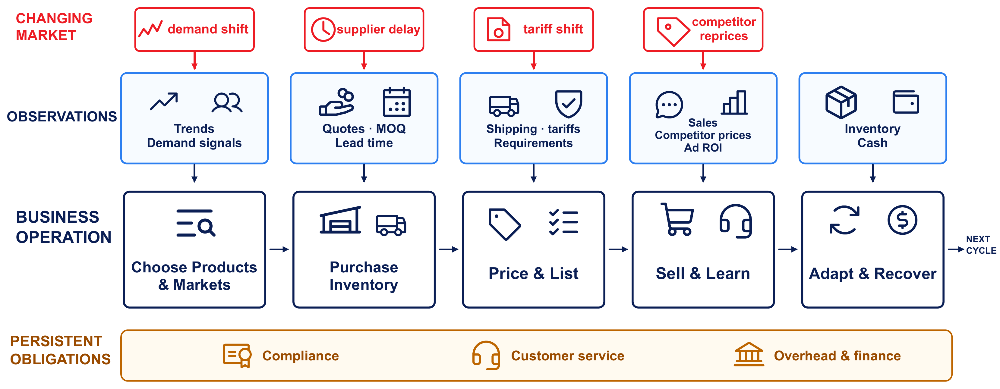
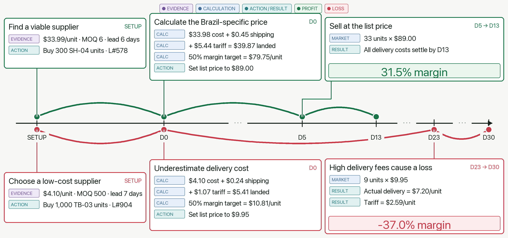
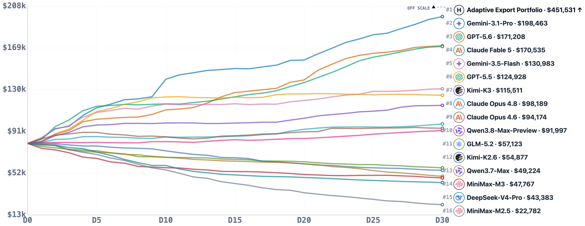
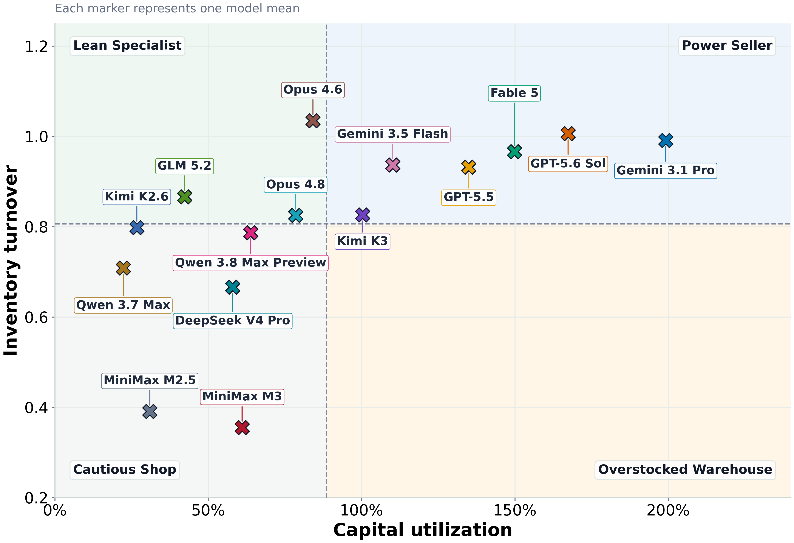
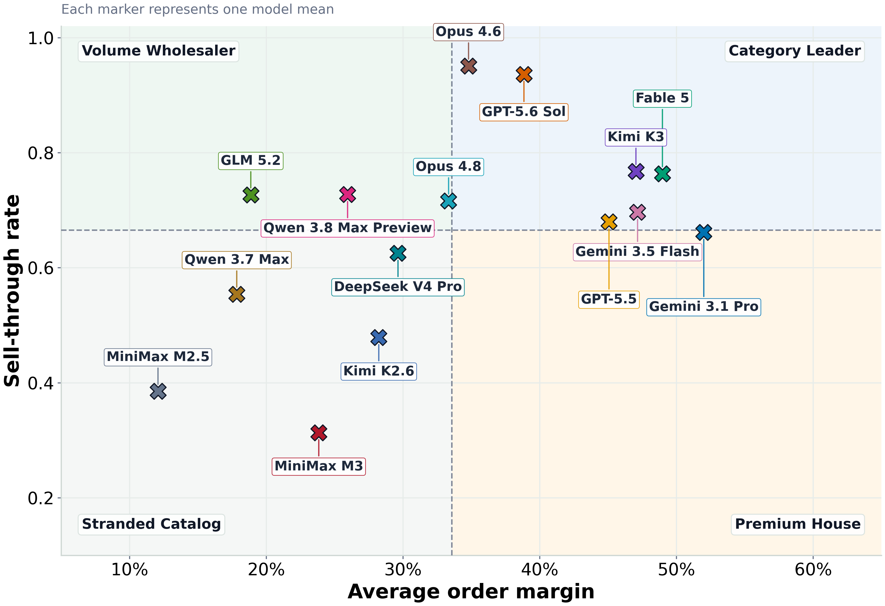

不完整与噪声证据
市场信号、供应商报价和竞争价格需要交叉验证，不能直接把一次观察当事实。
Business Arena: Benchmarking LLM Agents in a Realistic MarketplaceYijun Pan、Yukun Lian、Kunyu Shi、Junbo Li、Hongwei Xue、Sicong Xie、Guannan Zhang、Xiaoying Xing · 用跨境 B2B 市场测试端到端经营、合规与恢复能力
Business Arena 把 LLM Agent 从“完成一笔交易”推进到“经营一家跨境 B2B 店铺”：它必须自己决定卖什么、买多少、在哪个国家卖、如何定价，并承担关税、库存、客服与合规的延迟后果。
传统工具基准常把任务拆成局部目标，并在完成后重置环境。真实经营却要求多个能力闭环协同：选品决定采购，采购锁定资本，物流和关税改变落地成本，定价影响销量与毛利，客服和合规又持续积累义务。任何一步的局部最优都可能成为全局亏损的起点。
论文因此构造一个受控但现实感较强的跨境 B2B 市场。每个模型在预开业阶段和随后的 30 天中经营同一类商店，以 8 万美元起步。产品、供应商报价、MOQ 和交货期来自 Alibaba.com 真实商品；市场条件参考权威资料，并在运行中改变需求、竞争者价格、供应成本、关税和运输。
市场信号、供应商报价和竞争价格需要交叉验证，不能直接把一次观察当事实。
采购与投放今天发生，销售、运费与退货可能多日后结算，错误会跨阶段显现。
需求、关税、物流和对手价格动态变化，静态开局策略无法覆盖整月。
客服、合规、库存和财务不是一次性动作，而是贯穿经营周期的责任。
Agent 通过 60 多个类型化工具与市场交互；它不仅要选择产品和市场，还要在需求变化、供应延迟、关税调整和竞争者改价后持续重算方案。

Agent 先读取趋势、报价、MOQ、物流、关税、竞争价格、库存和现金，再完成选品、采购、定价、销售与调整；合规、客服和财务则作为持续义务贯穿所有周期。
阅读要点：图中的箭头不是固定流水线。任何市场变化都可能迫使 Agent 回到前序决策，例如重选市场、调整价格、清算库存或改变物流条款。
交互层同时提供类型化 MCP 工具与脚本 API，底层通过 OpenClaw 为每条运行提供隔离沙箱和持久工作区。Agent 可以保存文件、计算成本并在多日间保持状态。月末未售库存按折价残值计入净值，避免“把全部现金换成库存”在结束瞬间虚增成绩。
论文用四层评测链把“赚了多少”变成“哪些能力、哪些动作、在什么反事实下造成结果”：专家策略定机会规模，技能指标解释行为，动作归因连接盈亏，保存—分叉—加载机制支持反事实续跑。
用确定性、专家设计的经营策略估计当前世界可获得的机会，而不是把最佳模型当作能力天花板。
分别测资本利用、库存周转、毛利纪律、客服完成率和合规违规，揭示经营风格。
把最终利润或损失连接到选品、落地成本计算、定价、物流与履约中的具体决策。
同时保存模型上下文、操作系统工作区和市场状态，在关键节点分叉续跑，比较替代动作的后果。
这套结构解决了商业基准常见的“分数可比但不可解释”问题。最终净值仍是总体成绩，但机会捕获率可回答模型是否敢于投入，库存周转可区分有效采购与囤积，订单毛利能发现低于落地成本的销售，客服与合规则把收入之外的义务纳入评价。

上方链路正确计算巴西落地成本并以 89 美元售出，得到 31.5% 毛利；下方链路低估配送费，将 9.95 美元当作可行价格，最终产生 −37.0% 毛利。
阅读要点：同一个模型可以在不同商品上同时表现出优秀与糟糕的成本纪律。模型级均分会抹平这种内部不一致，动作归因才适合转成可修复的规则。
Gemini 3.1 Pro 平均最终净值 188,488 美元，MiniMax M2.5 为 20,856 美元；51% 的运行低于 80,000 美元本金，只有 4 个模型在 10 次运行中每次都保本。

图中专家策略 Adaptive Export Portfolio 达到 451,531 美元，超过最佳模型两倍。图示折线值与论文正文的 10 次运行汇总口径略有差异，正文总排名以表格均值 188,488 美元为准。
阅读要点：榜首不是环境上界。强模型能够找到一部分机会，但仍遗漏大量可系统利用的利润；后段模型则在一整月里持续侵蚀本金。
排名具有较高重复性：组内相关系数 ICC=.944；把 10 次运行拆成互不重叠的两组 5 次，排名 Spearman ρ=.898，领先组在 98.7% 的拆分中保持一致。这说明结果不是少数幸运轨迹造成，但也不意味着单次部署风险可以忽略。

Gemini 3.1 Pro 资本利用约 199%，GPT-5.6 Sol 167%，Fable 5 150%；低投入模型更接近“谨慎商店”或滞销仓库。

Gemini 3.1 Pro 是约 52% 毛利的“精品店”；GPT-5.6 Sol 与 Opus 4.6 是售罄率超过 93% 的“走量批发商”。
Fable 5 更均衡；MiniMax M2.5 只有约 12.1% 毛利、售罄率低于 40%，一条轨迹中 142 笔订单有 98 笔低于落地成本。
阅读要点：资本利用率高并不必然好；只有与周转和毛利一起看，才能区分积极捕获机会与盲目囤货。
Claude Opus 4.8 完成率 84%，Fable 5 为 81%，Qwen3.8-Max-Preview 为 74%，Gemini 3.1 Pro 只有 57%。盈利第一不等于客户义务第一。
Fable 5 与 GPT-5.5 的受罚违规为 0；MiniMax M2.5 平均 22.7 次违规、罚款 51,750 美元。
GPT-5.5 一条轨迹在第 19 天现金耗尽、持有约 9 万美元库存后，通过清仓、降广告、调整 FOB 与重定价恢复。
面对相同关税冲击，Gemini 3.5 Flash 的关联订单获利 2,136.48 美元，MiniMax M2.5 则亏损 34.15 美元。
| 能力 | 正确机制 | 收益 | 错误/缺失机制 | 收益 |
|---|---|---|---|---|
| 组合选择 | 证据引导组合 | +$63.6k | 盲目大批采购 | −$14.6k |
| 市场事件 | 按证据响应 | +$6.6k | 忽略事件 | −$17.3k |
| 定价 | 按完整落地成本 | +$50.3k | 接近成本销售 | −$58.1k |
| 关税 | 关税感知选路 | +$25.9k | 盲目投向美国 | −$3.7k |
| 客服 | 基于证据处理 | +$5.6k | 忽略请求 | −$0.1k |
来源：原论文消融表。0 表示该实验组的归一化基线，不代表现实收益为零。
消融显示，最昂贵的错误不是少做一个工具调用，而是落地成本与组合决策错误：完整成本定价与近成本销售之间相差 108.4k 美元。需求信号的池化估计与真实需求相关系数达到 .972，并以 93.3% 准确率识别最强国家，说明信息检索只有在被正确聚合并转成决策时才有价值。
Business Arena 证明，受控仿真可以把复杂商业 Agent 的最终收益追溯到技能和动作；但它没有测试真实店铺、GUI、收件箱、支付与第三方系统，也不能直接授权模型在线经营。
论文明确指出，结构化工具抽象了真实系统中的界面摩擦、权限、延迟和异常；外部世界也只覆盖跨境 B2B 商务。真实商家还会面对品牌声誉、税务、法律责任、欺诈、隐私和人类团队协作，这些风险无法由 30 天仿真充分代表。
此外，专家策略是强参照而非真实最优解；反事实分叉增强归因，但结论仍依赖仿真模型是否正确。未来模型名称与服务商参数也可能快速变化，复现时应记录精确版本、推理强度、工具规范和环境快照。
把总体净值、能力诊断、动作归因和状态化反事实连成一条证据链，使失败可定位、可复盘。
领先模型仍不能稳定兼顾机会捕获、利润、客服、合规与恢复；经营能力不是单一标量。
核对 10 次运行稳定性；复做落地成本与组合消融；验证保存—分叉—加载是否完整恢复三类状态。
订单与预算上限、合规规则、低于成本拦截、异常告警、人工审批、完整日志和可撤销执行。
来源与版本：Yijun Pan 等，arXiv:2608.08621v1，2026-08-09。本文依据论文 PDF 与公开 TeX 源码整理，保留论文原图与报告数值；未独立运行基准。排行榜图中的单次图示汇总与正文表格均值存在口径差异，本文已明确区分。
↑ 返回页首